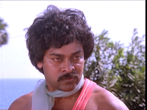
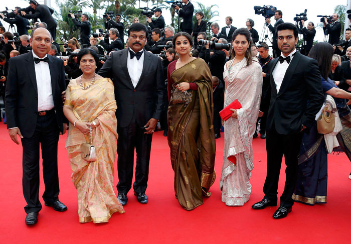
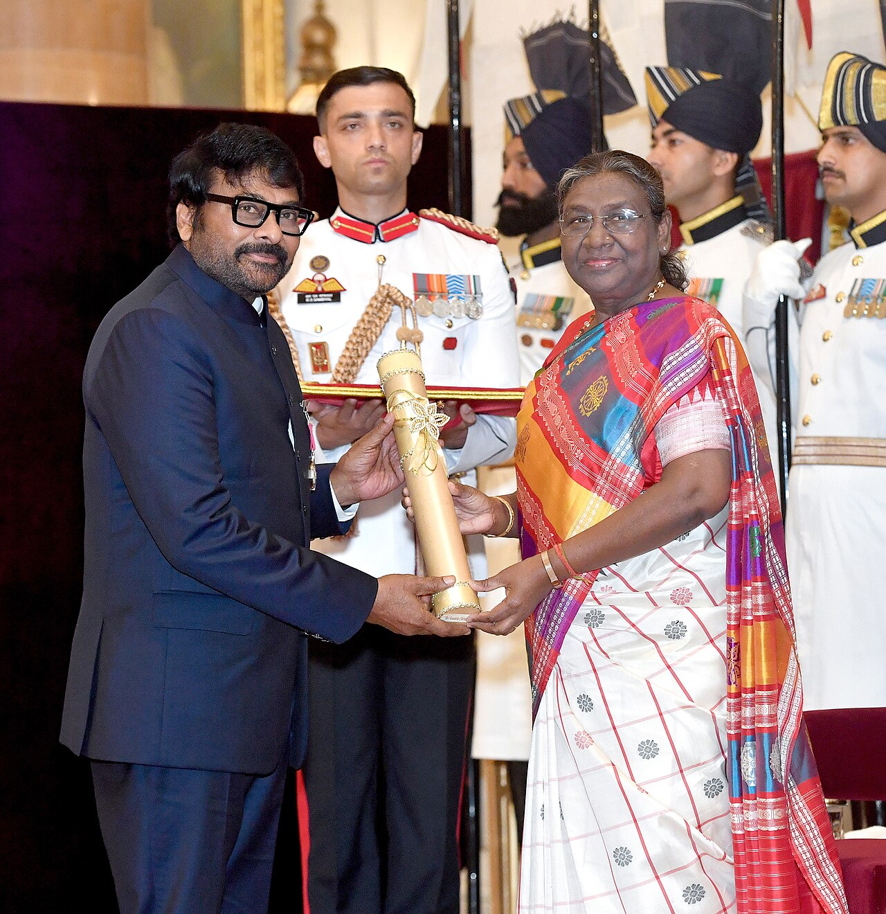

Reel one · 1978 – 1989
The rise of the Supreme Hero
Khaidi lights the fuse. Ilaiyaraaja's melodies, Chakravarthy's beats, and a hero who fights and dances like nobody the Telugu screen had seen.

A fan tribute · in theatres since 1978
Chiranjeevi retro radio — the 80s, the 90s and every hit that made the theatre shake.
One man. 156 films. 537 songs. 24,000 dance moves. Four decades of whistles, paper showers and house-full boards.
Film, song and dance-move counts as recognised by Guinness World Records, 2024.Now playing · No. 01
Music: —
First day · first show
Do what the front benches do. These work while the music plays.
Reel one · 1978 – 1989
Khaidi lights the fuse. Ilaiyaraaja's melodies, Chakravarthy's beats, and a hero who fights and dances like nobody the Telugu screen had seen.
Reel two · 1990 – 1999
Jagadeka Veerudu, Gang Leader, Gharana Mogudu. Bappi Lahiri's disco, Keeravani's mass numbers, and ticket queues that went around the block.
Reel three · 2000 onwards
Indra's veena step, Tagore, Shankar Dada — then a ten-year interval, and a comeback in Khaidi No. 150 that proved the whistles never stopped.
Four decades, one Boss
The first release. A young Konidela Siva Sankara Vara Prasad from Mogalthur walks on to the screen as Chiranjeevi.
Khaidi — A. Kodandarami Reddy's action drama turns a promising actor into the star of the masses.
Swayamkrushi — K. Viswanath's cobbler-to-businessman story brings the Nandi Award for Best Actor.
Rudraveena — K. Balachander directs, Ilaiyaraaja scores, and it wins the Nargis Dutt Award for national integration.
Jagadeka Veerudu Athiloka Sundari — Chiranjeevi and Sridevi in K. Raghavendra Rao's fantasy that every generation rewatches.
Gang Leader — Bappi Lahiri's beats, Vijayashanti alongside, and a title song still played at every college fest.
Gharana Mogudu — widely cited as the first Telugu film to cross ₹10 crore in distributor share.
Indra — B. Gopal's faction drama, the veena step, and box-office records across the state.
Walks the red carpet at the Cannes Film Festival, representing India as its tourism minister.

India's second-highest civilian honour, presented by President Droupadi Murmu — and, the same year, a Guinness World Record as Indian cinema's most prolific dancing star.

పాటల పెట్టె
Pick any reel and it goes straight on the screen. The radio carries on from there.
A fan-made retro radio for Megastar Chiranjeevi. Press play once and the songs run back to back, shuffled like a request show on a Sunday afternoon.
Video mode puts the song on the big screen. Audio mode drops a record over the picture and keeps the music going while you scroll — the player bar follows you down the page.
Space play or pause · N next · P previous · A audio/video · W whistle · D dialogue · T teenmaar · F flowers.